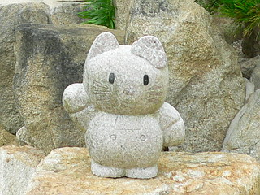

山口県の東部にある周防大島。
瀬戸内海の島、といえば小さな島を思い浮かべがちだがここは広い。かなり広い。
ナメてかかったおかげで、島を一周するのに想像を以上の時間を使ってしまった。
そんな島の南西部にある西長寺。
日見の大仏と呼ばれる大仏を擁するお寺である。
お寺の山門を潜ると、そこはこじんまりとした境内。
むむむむ。このこじんまりしたお寺の一体どこに大仏がいるのだろうか？
…もしかして、会員制の秘密地下室にでも鎮座ましましておられるのだろうか（前もこんなコトいってましたっけ、俺）？…
無論、会員制秘密地下室などあるはずもない。ふと見れば本堂の脇に小さな橋が架かっている。
その橋を渡って見ると…
これが大仏さんのお住まいである。
まあ、大仏殿という事になろうが、ご覧の通りのサイズ。
従って中にお住まいになられておられる大仏サマのサイズもまあ、ご想像がつくかと。
こんな感じです。
藤原末期に作られたというこの大仏さん、大きさは284センチ。
坐像の高さは半丈六（約2.4メートル）という大仏基準法はクリアしているので、まあ、大仏と呼んでも差し支えないかな、というサイズである。
ただし藤原期の作でこれほどのサイズの仏像がここ周防大島にあるということ自体がビックリなのだが、さらに驚いたのはこの大仏さんが海から引き上げられたのだという。
…コトの真偽はともかく、沈んでいた場所が光っていたところから日見という地名が付いたという位だから有名なエピソードなのだろう。
そんな千年灸、じゃなくて千年級の歴史ロマンを堪能しつつ、ふと横を見ると…
何やら石がごちゃごちゃと並んでいるスペースがある。
藤原期の大仏を参拝し、歴史ロマンに酔っぱらいたい方は決してその先に進まぬように。
千年の恋もぶっ飛びますから。
とはいえ実はここからが本題だったりするのだが、こんな感じの極楽系ガーデンが展開されているのだ。
この斜面に石積みされたトコロは三王山西国巡りといい、西国三十三ヶ所のミニ巡礼庭園となっている。
「念彼 観音力」と意味不明の文字が力強いフォントで刻まれていたりして、アタシ好みの前のめり庭園。
石積みの合間の石段を登っていくと、途中途中に西国札所の移し本尊の石像が並んでいる。
どういう訳か札所の名前はご丁寧にひらがなで表記。お寺の名前を全部ひらがなで表記するとちょっと間抜けっぽい事を発見しました。
自然石かと思っても良く見ると顔が彫り込まれてあったりして油断がなりませぬ。
まあ、それにしても随分石を使ったもんだ。

途中にはカラフルな不動明王も。
アウトドアでこれだけ派手な色彩の仏像も珍しい。
最近の造仏技術も進化したもんですなあ。
石段を登っていくと変わったお堂がある。
まだ、真新しいお堂は扉が閉まっており、中の様子は窺い知ることが出来なかったが、どう見ても二階に行けるでしょう。
もしかしたら日見の大仏2号とかが鎮座ましましているのかも知れない。
そんなこんなで園内を歩いていると頂上の部分に着く。
石仏ガーデンなのにここだけ何故かブロンズの観音サマ。
足元で拝むジジババがいいですね。
この辺はまだ完成しておらず、ユンボやダンプや石や土が散乱して男っぽい現場風景が広がっていた。
ユンボの辺りから遠くを眺めると海が見える。
この海の辺りから大仏さんは引き上げられたのだろうか？
で、何故に天使！？
園内には大変珍しい仏像がいくつも並んでいる。
番外霊場の移し本尊、という風に了解させてもらいます。
↓宇留虎観音。悪と戦う仏法の守護神、な筈。
↓あ、これは狛犬ですね。
↓これも狛犬です…か
↓これも…狛犬なんですっ！

↓こ…これは。お腹がすいた人に自分の頭を差し出すという伝説の庵犯慢観音では！（にてねー）

てな具合に福建あたりの石工さんが著作権など一切シカトして心を込めて作った、ありがたさ満点の観音様が並んでいる。
賽銭あげたろか。
その他にもやけにリアルなお地蔵さんや重荷を背負わされた挙句ワイヤで巻かれたお坊さんなどに涙しつつ、素晴らしきパラダイスガーデン巡りは終了。
昨今流行の無節操なガーデニングなど足元にも及ばないがちがちのコンセプトが支配するパラダイスガーデニングの真髄を見た思いです。
瀬戸内海の島で決して中心街からも近くないこのお寺の一体どこにこのような大規模なパラダイスガーデンを造るチカラがあるのだろう。
あえて詮索はしませんが非常に気になるところですね。
2006.8.